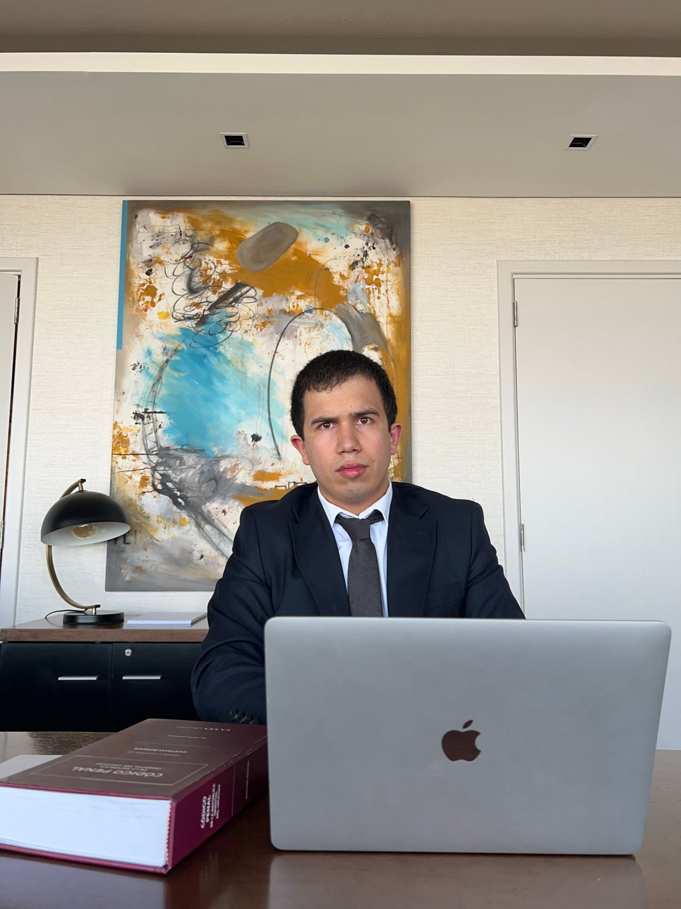
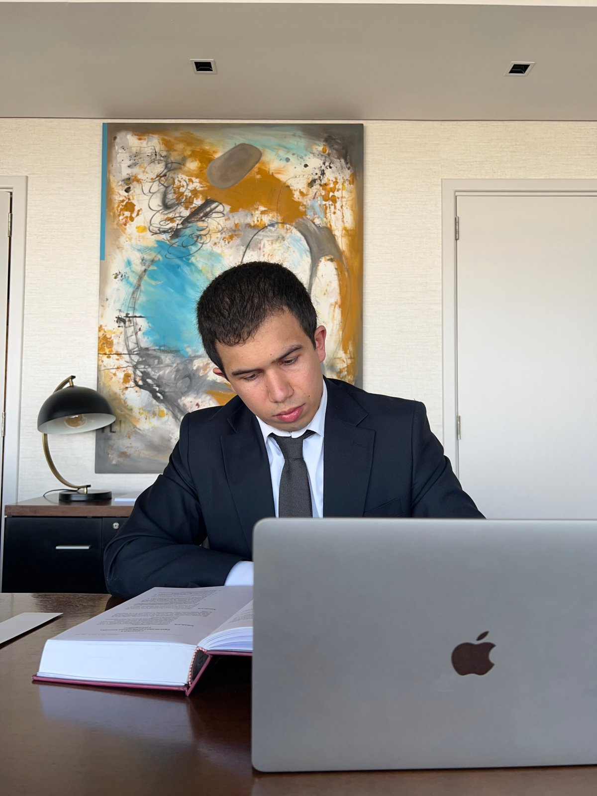
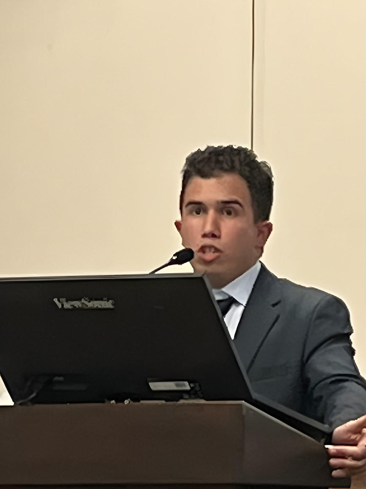

Abogado · Docente de Derecho Penal (UDELAR) · Montevideo
Representación en materia penal, civil, comercial, arrendaticia, laboral, de familia y de defensa de la competencia. Cada asunto es atendido personalmente por el abogado a cargo.
Docente de Derecho Penal
Facultad de Derecho, Universidad de la República
Estudios líderes del país
Trayectoria en los departamentos penales y contenciosos de firmas de primer nivel
Autor de diversos artículos
En su área de especialidad

Áreas de práctica
Defensa de imputados y representación de víctimas y denunciantes en todas las etapas del proceso penal: investigación, audiencias, juicio y recursos.
Delitos económicos, lavado de activos, fraude y responsabilidad de directivos. Actuación ante la Fiscalía especializada y asesoramiento preventivo.
Litigios civiles, daños y perjuicios, contratos, acuerdos transaccionales y procesos concursales.
Divorcios, pensiones alimenticias, tenencia y visitas, y procesos ante los Juzgados de Familia Especializados.
Denuncias y defensas ante la Comisión de Promoción y Defensa de la Competencia (COPRODEC) y organismos reguladores.
Infracciones aduaneras, contrabando y defraudación ante el Juzgado Letrado de Aduana, incluidos planes de pago.
Reclamos y defensas en materia laboral, despidos, liquidaciones y conflictos entre empleadores y trabajadores, en vía administrativa y judicial.
Elaboración y revisión de contratos civiles y comerciales, acuerdos transaccionales y documentos societarios, a la medida de cada operación.
Acompañamiento jurídico continuo a personas y empresas, con una mirada preventiva que anticipa riesgos antes de que se conviertan en conflictos.

Perfil
Ayudante (U.R) Grado I · Instituto de Derecho Penal y Criminología, Facultad de Derecho, UDELAR
Abogado egresado de la Facultad de Derecho de la Universidad de la República, con certificación profesional en Derecho Penal y Procesal Penal. Desde 2022 ejerce en el área penal y contenciosa: primero como procurador y luego como abogado, integró los departamentos de litigio de algunos de los estudios jurídicos más prestigiosos del país.
En esas firmas intervino en litigios penales, civiles y comerciales complejos: en la redacción de escritos, en la preparación y concurrencia a audiencias y en casos penales de alta trascendencia pública, tanto en la defensa como en la representación de víctimas ante Fiscalía y los Juzgados Penales. También asesoró a víctimas de delitos en el Consultorio Jurídico de la Facultad de Derecho.
Hoy combina esa experiencia con la docencia universitaria en Derecho Penal, que mantiene su práctica al día con la doctrina y la jurisprudencia más actuales.
Experiencia
Departamentos penales y contenciosos de estudios jurídicos líderes del país (2022–2026)
Formación
Abogado, Facultad de Derecho, UDELAR (2025) · Certificación en Derecho Penal y Procesal Penal
Idiomas
Español, portugués (avanzado) e inglés (B1)
Docencia y producción académica
La actividad académica es parte central del ejercicio profesional: enseñar, investigar y publicar exige un conocimiento riguroso y actualizado de la ley y de su aplicación práctica.

Desde octubre de 2025
Instituto de Derecho Penal y Criminología, Facultad de Derecho, UDELAR
Desde 2023
Facultad de Derecho, UDELAR
“Preparación del caso en materia de delitos de drogas”
En Guía práctica de litigación penal. Montevideo: FCU, 2026. Autor.
“La intercepción de comunicaciones telefónicas: su tratamiento en el derecho positivo uruguayo”
Revista Uruguaya de Derecho Procesal 2/2026. Montevideo: FCU, 2026. Coautor.
“La medida innovativa: su tratamiento en el derecho positivo uruguayo”
Ponencia, Jornadas Estudiantiles de Derecho Procesal, IUDP, 2024. Coautor.
Certificación profesional en Derecho Penal y Procesal Penal · UDELAR, 2025
Curso de Derecho Penal · CAU, 2025
XXI Jornadas Nacionales de Derecho Procesal · IUDP, 2024
III Jornadas de debate del Foro Uruguayo de Derecho Probatorio · FCU, 2024
Seminario “A diez años de la reforma del CGP” · FCU, 2023
Seminario “Constitución en tiempos de pandemia” · Instituto Uruguayo de Derecho Constitucional, 2020
Cómo trabajo
Escuchamos el caso, revisamos la documentación y explicamos con claridad las opciones y los riesgos.
Se propone un plan de acción por escrito, con los pasos previstos y los honorarios acordados de antemano.
Información periódica sobre cada novedad del expediente y disponibilidad directa del abogado a cargo.
Toda la información que se comparte en una consulta está amparada por el secreto profesional.
Contacto
Escriba o llame para coordinar una reunión presencial o por videollamada. Se responde dentro del día hábil siguiente.
Teléfono
Ubicación
Horario de atención
De lunes a viernes: 9:00 a 18:00 hs.
Urgencias penales: 24 horas